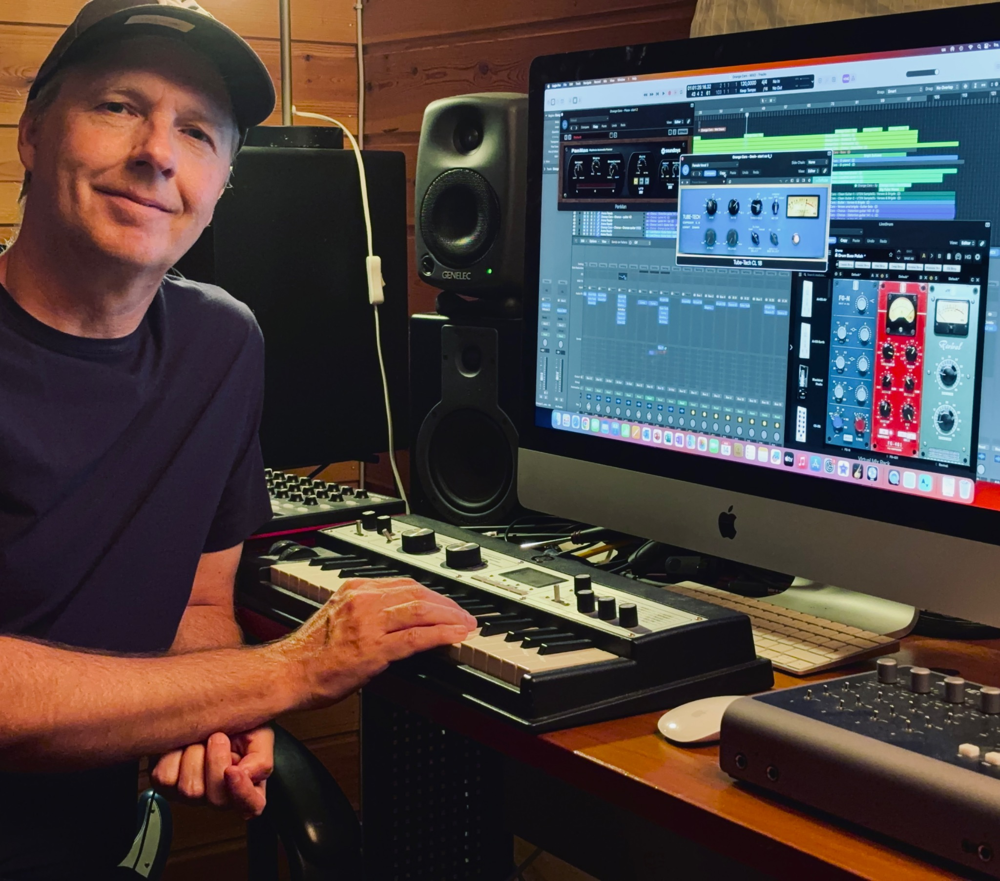

Make the sections hit harder
Verses, pre-choruses, choruses, dance breaks and rap sections can each have their own lift, contrast and purpose.
Pro-Sessions · K-Pop Production · Worldwide · pro-sessions.com
Bring your voice, topline, lyrics, hook, references or an early demo. We help develop it into an original K-pop inspired release with strong hooks, bold section changes, detailed production, layered vocals and a polished final sound.
Your sound comes first
Strong K-pop production combines memorable hooks, vocal personality, bold contrasts and detailed sound design — creating a song that keeps moving while still feeling like one complete release.
Verses, pre-choruses, choruses, dance breaks and rap sections can each have their own lift, contrast and purpose.
Pop, EDM, hip-hop, rap, R&B and electronic textures can be combined in one release when the transitions and direction are handled well.
Lead vocals, doubles, harmonies, adlibs and effects help create width, identity and the polished layered feeling many artists want.
Use the energy, clarity and detail you love as a creative starting point, then shape the finished track around your own artist identity.
Three ways to start
Start with what you already have. A chorus idea, topline, lyric, voice memo or rough demo can all be enough to begin.
You have an idea and want to develop the song before or during production.
You have the song and want to build the complete release around it — from arrangement and instrumentation to vocals, mix and master.
You already have a strong draft and want help lifting it further into a release-ready production.
Original work, shaped around you. Modern K-pop can be a creative reference point while the song is built around your own voice, language, influences and artist identity.
From idea to release
A K-pop inspired production can begin at many stages. The process is about identifying what already works, then building a more dynamic, polished and characterful release around it.
More than one lane
A production might lean toward sleek pop, bring in EDM energy, hip-hop attitude, R&B detail, rap sections, cinematic intros or dramatic arrangement changes. The craft is choosing the contrasts that create the right identity and momentum for the artist.
The process starts with your voice, references and direction, then uses arrangement, transitions, sound design and vocal production to make the final release feel exciting, polished and recognisable.
Vocal production matters
Lead vocals become part of the full arrangement through doubles, harmonies, adlibs, response parts, vocal effects and production choices that add width, character and movement.
If you record remotely, Fredrikstad Studio can also guide you through the practical recording process so the final vocal files provide what the production needs.

A direct studio relationship
You work directly with Fredrikstad Studio throughout the project. We listen to the song, references and artist direction, then shape the production around what the release needs with one coherent creative direction from start to finish.
How it works
Start by sending what you have. The first review helps define the strongest production route for the song and the direction you want to create.
Send a demo, voice memo, topline, rough mix, MP3 or private link and tell us what direction you want.
We listen to the song, the current production and the references or identity you have in mind.
You receive a clear recommended approach, what is included and the total project price before work starts.
Song, arrangement, transitions and vocals are developed around the agreed direction with direct communication along the way.
Final production, vocal work, mixing and mastering bring everything together into the finished record.
Before you send it
A rough idea is enough for the first review. The production route can be decided after we hear the song and understand where you want to take it.
Independent artists worldwide who want to create original music with the energy, polish, contrast and production detail associated with modern K-pop — while developing their own sound and identity.
Yes. A hook, topline or early melody can be a strong starting point. Song development can then include lyrics, harmony, structure and the full production around it.
Yes. If the song benefits from it, the structure and production can make space for rap, spoken sections, attitude shifts and other contrasting moments.
You can work in English or another language. The K-pop direction comes from the songwriting, arrangement, production, vocal style and overall creative approach.
Yes. We can provide practical remote guidance for recording clean vocal takes, doubles and harmonies, then preparing the files for production and mixing.
Yes. Starting with one song is often the best way to begin, and continuing over several releases can help develop a stronger artistic identity.
Start with the song
Send a song idea, demo, topline, rough production or private link and tell us what you want the release to become. You can upload an MP3 up to 10 MB.
Free initial project review. We listen first, recommend the strongest next step and give you a clear quote for the suggested production scope.
Thank you! Your enquiry has been sent.